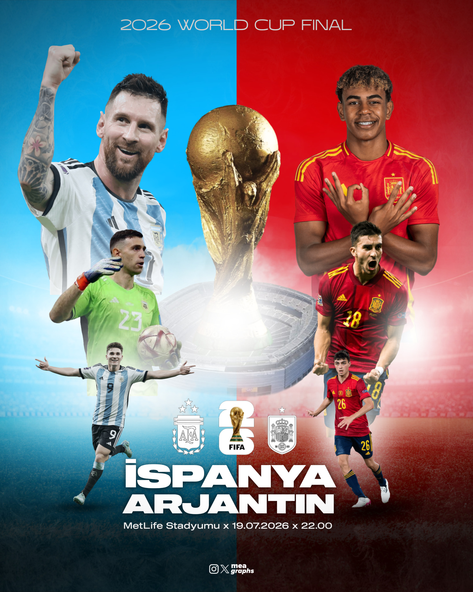
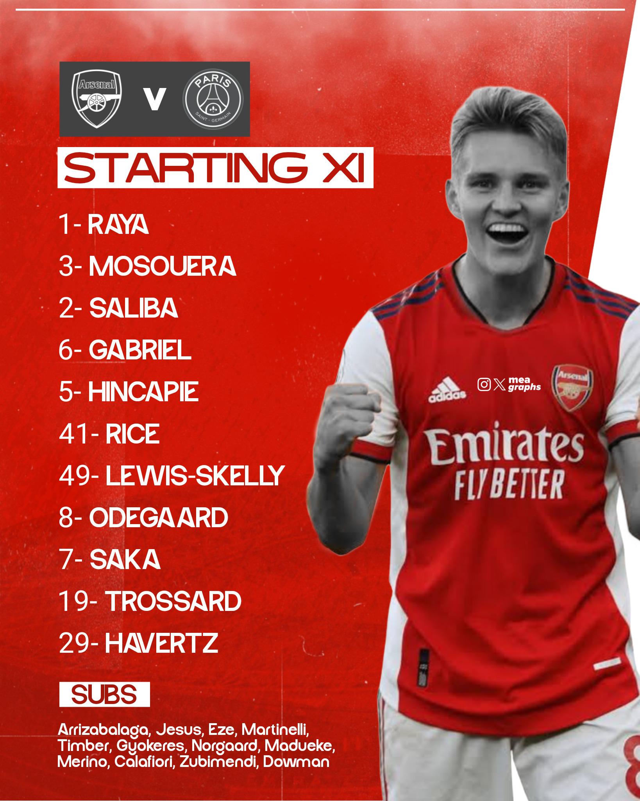
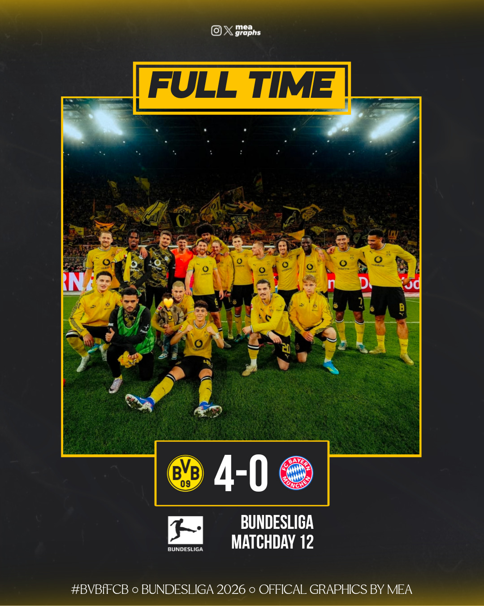
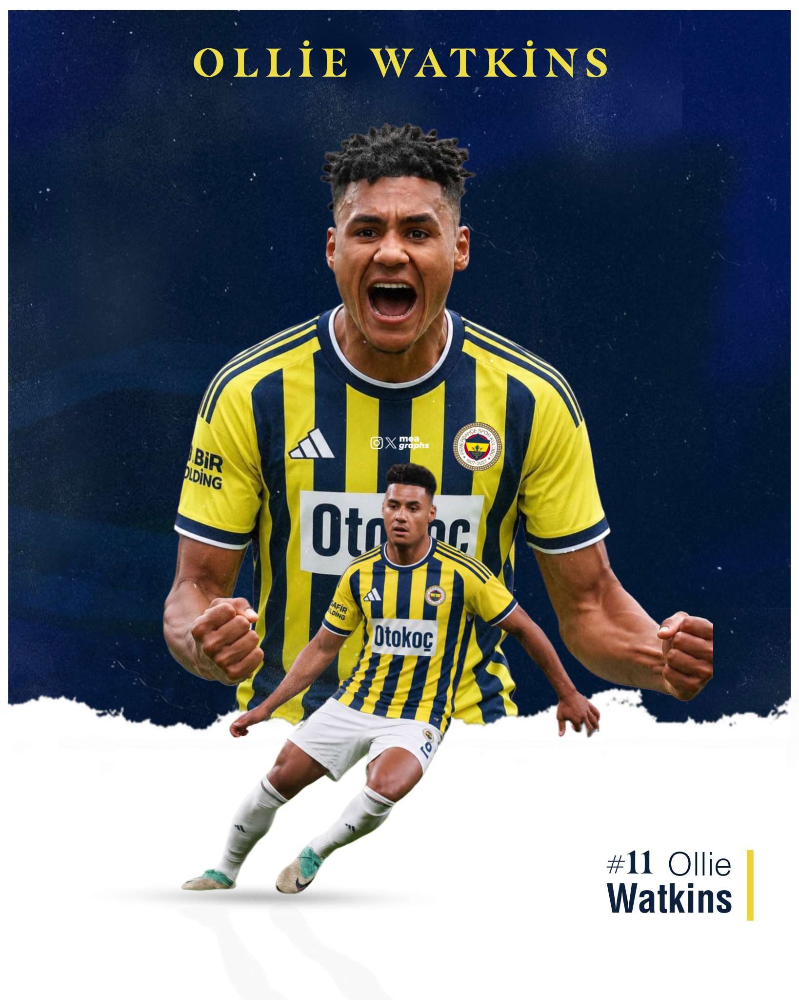
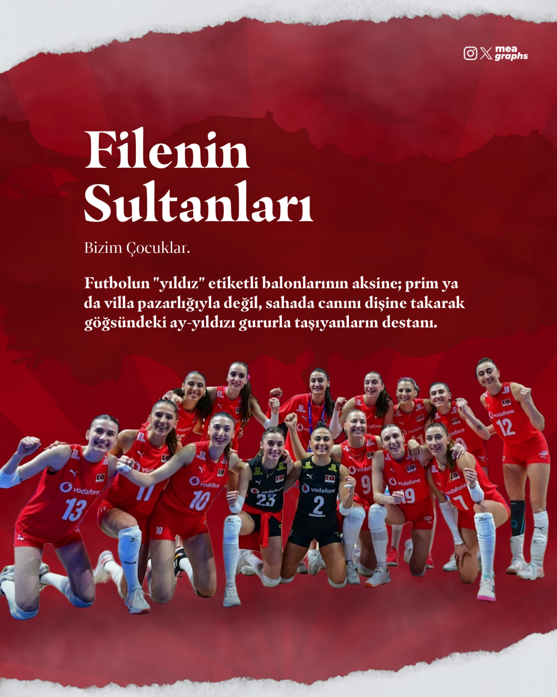
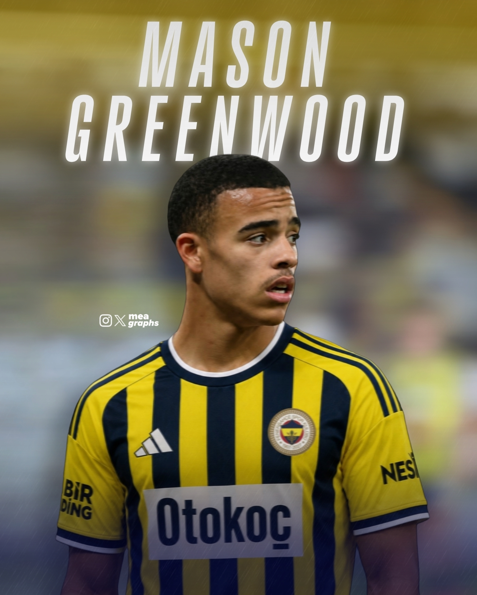
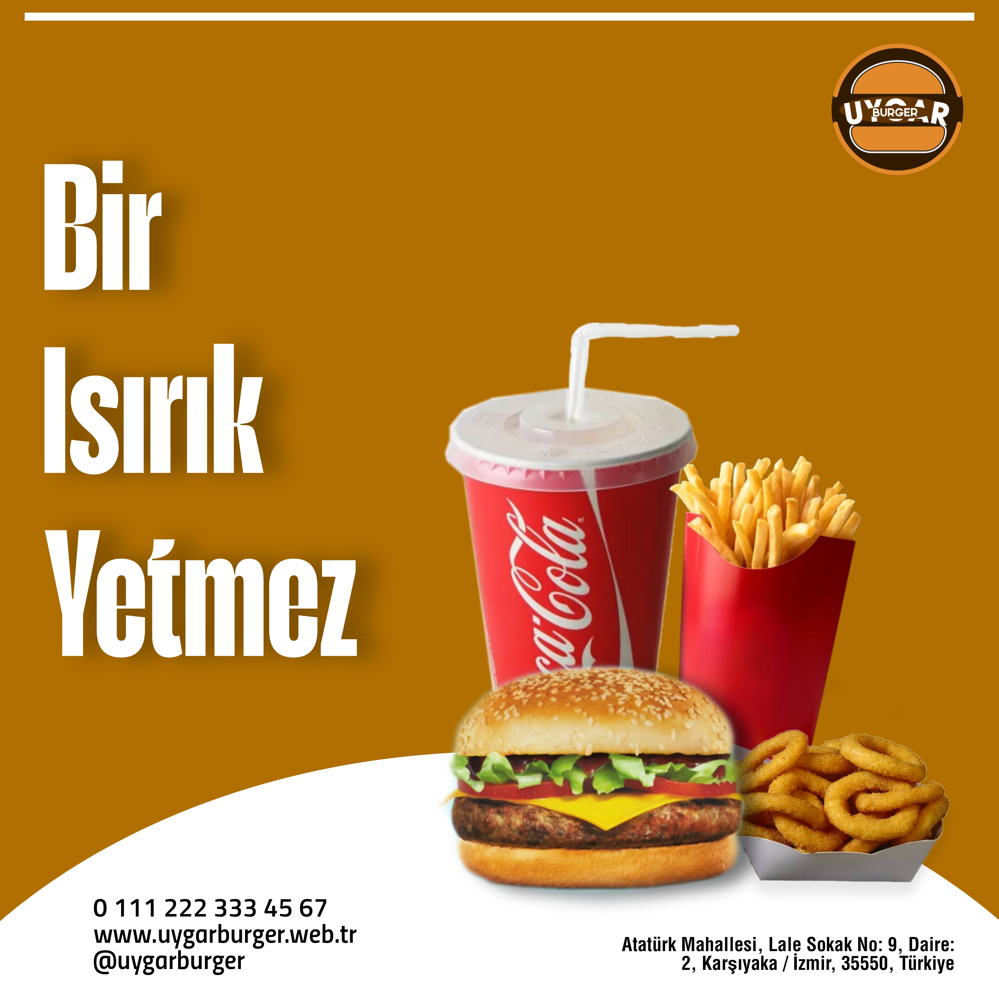
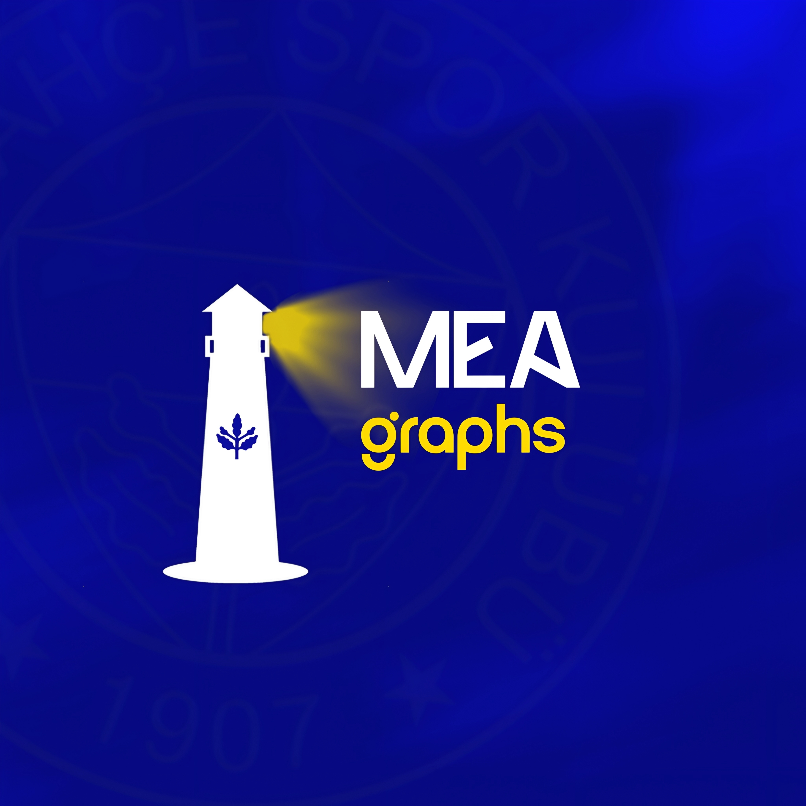

Mehmet Emir Akdoğan
Exploring the boundaries of minimal and modern expression.
VIEW WORKSELECTED WORKS

2026 Dünya Kupası Finali Konsepti
2026 Dünya Kupası finali için İspanya ve Arjantin'i karşı karşıya getiren, Messi ve Lamine Yamal gibi yıldızları içeren rüya final maç günü tasarımı.

Youri Tielemans - Manchester United Transfer Konsepti
Youri Tielemans'ın Aston Villa'dan Manchester United'a transferini duyuran, Old Trafford stadyumu silüeti ile zenginleştirilmiş kırmızı ağırlıklı estetik bir transfer duyurusu konsepti.

Marc Cucurella - Real Madrid Transfer Konsepti
Marc Cucurella'nın Real Madrid'e transferini duyuran, Santiago Bernabéu stadyumu arka planı ve ikonik Real Madrid amblemiyle harmanlanmış şık bir transfer duyurusu tasarımı.

Arsenal vs PSG - İlk 11 Kadrosu
Arsenal ve Paris Saint-Germain arasında oynanacak dev maç öncesi hazırlanan, Martin Ødegaard'ı öne çıkaran dinamik ilk 11 ve kadro tasarımı konsepti.

Chelsea vs Benfica - Maç Sonucu
Şampiyonlar Ligi konseptli maç sonu skorbord tasarımı. Chelsea'nin Benfica'yı 3-0 mağlup ettiği maçın ardından futbolcuların sevinç anını yansıtan dinamik bir çalışma.

BVB vs FC Bayern - Maç Sonucu
Borussia Dortmund'un Bayern Münih'e karşı aldığı 4-0'lık galibiyeti duyuran, 'Bundesliga 2026' konseptli maç sonu skorbord tasarımı.

Vedat Muriqi - Resmi İmza Konsepti
Vedat Muriqi'nin Fenerbahçe'ye transferini duyuran, neon ışık detayları ve 'Done Deal' konseptiyle hazırlanmış resmi imza tasarımı.

Fenerbahçe - 26/27 Fikstür Konsepti
Fenerbahçe'nin 2026-2027 sezonu Trendyol Süper Lig fikstürünü, ligdeki tüm rakiplerin logolarıyla birlikte gösteren maç takvimi konsept tasarımı.

Fenerbahçe - Maç Kadrosu Görseli
Galatasaray derbisi için hazırlanan, alternatif ve yaratıcı isimlerle zenginleştirilmiş Fenerbahçe kamp kadrosu maç günü görseli konsepti.

Man of the Match - Marco Asensio
Şampiyonlar Ligi konseptli 'Maçın Adamı' tasarımı. Marco Asensio'nun istatistiklerini (pas, gol, asist) sade ve çarpıcı bir tipografi ile sunan şık bir çalışma.

Ollie Watkins - Transfer Concept
Ollie Watkins'in Fenerbahçe formasıyla resmedildiği, iki farklı aksiyon pozunu bir araya getiren dinamik ve yaratıcı bir transfer konsept tasarımı.

Filenin Sultanları - Bizim Çocuklar
Türkiye A Milli Kadın Voleybol Takımı için hazırlanmış özel tasarım. Sahada canını dişine takarak ay-yıldızı gururla taşıyanların destanını vurgulayan, anlamlı bir metinle desteklenmiş kompozisyon.

Serhou Guirassy - Transfer Concept
Serhou Guirassy'nin efsanevi çubuklu retro Fenerbahçe formasıyla resmedildiği, dinamik ve şık bir transfer konsepti tasarımı.

Mason Greenwood - Transfer Concept
Mason Greenwood'un Fenerbahçe formasıyla resmedildiği, potansiyel transfer söylentilerinden ilham alınarak hazırlanmış konsept tasarım çalışması.

Jorge Jesus "Hikayem Bitmedi"
Fenerbahçe teknik direktörü Jorge Jesus'un "Hikayem bitmedi" sözünden ilham alınarak tasarlanmış, kulüp logosu ve klasik sarı-lacivert renklerle desteklenmiş bir konsept poster çalışması.

Vedat Muriqi Tercihini Yaptı
Vedat Muriqi'nin transfer sürecinde tercihini Fenerbahçe'den yana kullanmasını konu alan, arka planda kulüp başkanlarının transfer düellosunu yansıtan bir konsept tasarım.

Fenerbahçe SK - Marco Asensio
A surreal digital sports composite created for Fenerbahçe, featuring a player's duality with a detailed close-up and a smaller action figure. The background combines a realistic stadium exterior with a fantastical cosmic-planetary element and a stylized mountainscape, all unified through advanced photo manipulation, texture blending, and a consistent cool tone color grade.

World Cup Matchday - Türkiye v Australia
A dynamic matchday concept for Türkiye in the World Cup 2026. This graphic puts Arda Güler and the team in focus with a dramatic textured red background, bold text-overlay branding, and clear icon-based flag presentations for a clean yet powerful event preview.

Tadić "On Fire" Stylized Poster
A highly textured, dynamic player appreciation poster for Dušan Tadić. It features a blended multi-layer composition with a stylized 'on fire' typographic overlay, dynamic lighting, and an impactful 'fists of victory' pose, all set within a gritty, atmospheric backdrop.

Matchday Concept: Sivasspor v Fenerbahçe
A unique, double-player focus matchday concept graphic. The design cleverly overlays a central shield shape onto two Fenerbahçe players (one in full action, one posed in celebrating), set against a clean, uncluttered white background with precise match details.

Messi: Parisian Maestro
An intricate and vibrant composite design showcasing Lionel Messi in his PSG kit. It weaves multiple action poses and a central celebratory image together, integrated with the PSG club crest and abstract geometric lines against a rich, dark atmospheric purple background, highlighting his artistry.

United for Glory - Champions League Concept
An intense, panoramic Champions League concept scene featuring a powerful Fenerbahçe team huddle on a custom-branded pitch. It dramatically combines player proximity with an atmospheric stadium background and a storm-lit sky, all brought together with a sharp, bold typographic base.

Fenerbahçe: European Ambitions
In this UEFA Europa League themed concept work, the club president, manager Jorge Jesus, and the team's unified huddle are combined against a dramatic, stormy sky background. An epic visual storytelling is aimed with golden light rays and the trophy placed in the foreground. It was designed using layered visual editing and color manipulation techniques.

Matchday: İstanbulspor vs Fenerbahçe
In this dynamic matchday visual prepared for the Süper Lig fixture, the team's iconic huddle during a goal celebration is chosen as the focal point. While an energetic atmosphere is created with the vibrant yellow smoke effect in the background, the match details highlighted with a modern and bold typography give the design a corporate identity.

Fenerbahçe vs Ankaragücü: On the Ball
A dynamic sports poster focusing on the duel and ball control of two rival players. To create a sense of depth, the stadium image in the background is blurred, and the players' mobility and focal point on the pitch are enhanced with a subtle light effect (glow) applied around them and smoke details in the foreground.

UEFA Europa League: Group Stage Infographic
An information-focused social media graphic listing Fenerbahçe's opponents in the UEFA Europa League. A clean and modern infographic design with high readability for fans was created by balancing the club's corporate yellow and navy blue tones, sharp-edged stripes, and logos.

Away Day: Rennes vs Fenerbahçe
An away match visual dominated by deep navy blue tones, emphasizing the unity of manager Jorge Jesus and the players. An asymmetrical balance is established with assertive typography placed on the left vertical axis and club logos in the top right corner. The composition is deepened with a fog effect around the player group and a neon contour on the manager's figure.

Fenerbahçe SK: Match Day Concept
A vibrant digital sports poster designed for a Fenerbahçe match day event, highlighting key players with clean background masking, official club branding, and custom textured typography.
POSTERS

Uygar Burger - Bir Isırık Yetmez
Uygar Burger için hazırlanmış, 'Bir ısırık yetmez' sloganını öne çıkaran promosyonel sosyal medya afişi tasarımı.

Erasmus+ Staj Tamamlama Posteri
Bilişim Teknolojileri alanından 6 öğrencinin Erasmus+ programı kapsamında e-ticaret web sitesi uygulamaları alanındaki 21 günlük stajlarını tamamlamalarını duyuran bir afiş tasarımı.
WALLPAPERS

Vedat Muriqi - Duvar Kağıdı
Vedat Muriqi'nin gol sevinci ve ikonik 94 numarası ile tasarlanmış, Fenerbahçe taraftarları için özel mobil duvar kağıdı tasarımı.
LOGOS
Uygar Burger - Logo Konsepti
Uygar Burger için hazırlanan, modern hatlara sahip burger ikonu ve markanın ismini dinamik bir şekilde birleştiren logo konsepti.

MEA Graphs - Kişisel Marka Logosu
Kendi kişisel markam olan MEA Graphs için Fenerbahçe temasından ve deniz feneri sembolünden esinlenerek hazırladığım özel logo tasarımı.

Primes Fener Logo Concept
A bold illustrative logo design featuring Alex de Souza.

Dikine Futbol Logo Concept
A tactical football channel logo design with a modern touch.
CONTACT
Get in touch for collaborations and inquiries.
MAIL VIA GMAILABOUT ME
I am an 18-year-old graphic designer and a graduate of Merzifon Vocational and Technical Anatolian High School. I combine the core discipline I acquired during my high school education with my passion for the design world and my graphic design skills, which started as a hobby and turned professional.
Believing in the power of visual communication, I focus on producing modern, aesthetic, and functional digital content. By utilizing Adobe software and digital design tools, I continuously improve myself in areas such as corporate identity, social media management, and poster design. I am a highly motivated designer who is open to innovative ideas, a fast learner, and eager to take part in visionary projects.